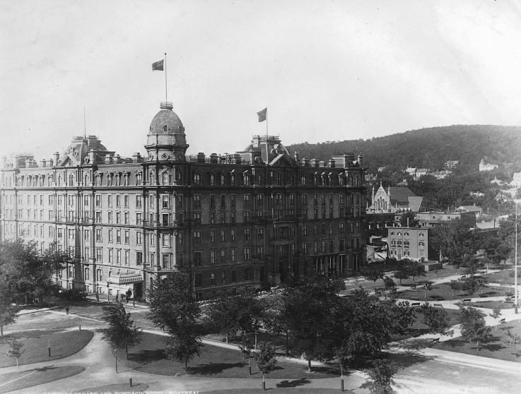
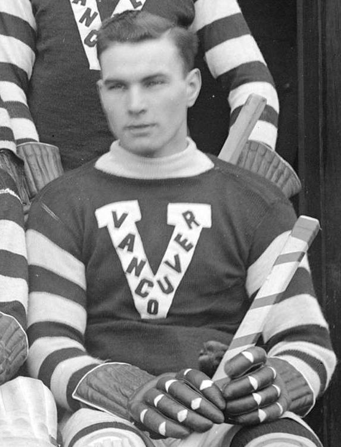

1917年的今天：一场老板间的内讧，如何逼出了国家冰球联盟？
面对多伦多蓝衫队老板埃迪·利文斯通的无休止纠缠，国家冰球协会高层齐聚蒙特利尔温莎酒店，用另立门户的方式彻底将他踢出局。

1917年11月26日，来自国家冰球协会（NHA）四家俱乐部的代表秘密集结于蒙特利尔的温莎酒店。他们当场签署协议，决定彻底抛弃现有的联盟组织，另起炉灶建立一项全新的赛事——国家冰球联盟（NHL）。这场轰轰烈烈的“另立门户”，初衷绝非勾画什么宏伟的北美大陆版图，而纯粹是一记金蝉脱壳的法律偏门，目标只有一个：彻底封杀多伦多蓝衫队（Toronto Blueshirts）那个刺头大老板——爱德华·詹姆斯·“埃迪”·利文斯通（Edward James "Eddie" Livingstone）。
齐聚酒店密室敲定分道扬镳的共有四位俱乐部掌门人：蒙特利尔流浪者队的萨姆·利希滕海因（Sam Lichtenhein）、蒙特利尔加拿大人队的乔治·肯尼迪（George Kennedy）、代表渥太华参议员队的汤米·戈尔曼（Tommy Gorman）以及魁北克斗牛犬队的迈克·奎因（Mike Quinn）。前NHA秘书弗兰克·考尔德（Frank Calder）被推选为NHL首任总裁。会后，当蒙特利尔记者埃尔默·弗格森（Elmer Ferguson）打探这闭门会谈究竟谈出了什么名堂时，肯尼迪毫不掩饰地道出了真相：“这跟我们过去的联盟没什么两样，唯一的区别就是，我们压根没邀请埃迪·利文斯通。”
一人坐拥两队、跨联盟挖角与一战阴影

利文斯通曾是安大略冰球协会的裁判，也当过多伦多《邮报与帝国报》的记者。1914年，他通过买下多伦多安大略队并将其更名为多伦多三叶草队（Toronto Shamrocks），正式跨入职业冰球资方行列。出征1915–16赛季前，他又以2000加元从弗兰克·罗宾逊手中买下了多伦多蓝衫队。然而，联盟勒令他必须在1915年11月20日前出售三叶草队，绝不允许一人坐拥两家球会。还没等转让谈妥，太平洋沿岸冰球协会（PCHA）的弗兰克与莱斯特·帕特里克兄弟便趁火打劫，强行挖走了蓝衫队包括弗兰克·弗伊斯顿（Frank Foyston）、卡利·威尔逊（Cully Wilson）以及门将哈普·霍姆斯（Hap Holmes）在内的核心主力。为了保住阵容，利文斯通索性直接把三叶草队的球员全部套上蓝衫队战袍，致使三叶草队彻底沦为毫无资产的空壳；期限一到转让未果，NHA随即收缴了三叶草队的运营特许权。
矛盾迅速在多条战线上全面激化。1915年2月3日，多伦多后卫乔治·麦克纳马拉与霍华德·麦克纳马拉兄弟因父亲生命垂危赶赴床前陪护，利文斯通拒绝派队出战，利希滕海因的流浪者队直接被判弃权获胜。利希滕海因曾开价3000美元想将利文斯通彻底买断出局；利文斯通则反唇相讥，开价5000美元要求利希滕海因关停流浪者队。到了1916–17赛季，随着加拿大全面投入一战、军役抽调掏空了各大队大名单，利文斯通又在球员所有权上四处撕破脸皮，他先是封杀当家球星赛·丹内尼（Cy Denneny），转头又以创纪录的1800美元天价将其倒手卖给渥太华。
1917年2月，局势走向彻底失控。当时以加拿大远征军第228北方燧发枪营名义组队参赛的军人俱乐部接到命令开赴海外战场。为了平抚剩下的赛程裂痕，其余球队老板在2月11日背着利文斯通召开紧急会议，投票中止了蓝衫队的参赛资格，并以抽签方式将多伦多的球员瓜分殆尽。
逼入章程死角：温莎酒店的金蝉脱壳

1916–17赛季落幕后，NHA以利文斯通必须在60天内将球队易手为条件，恢复了多伦多的席位。可利文斯通不仅接连回绝了多笔收购报价，还一纸诉状将合伙人全告上法庭，更申请到法院禁令，彻底锁死了任何强制转让的通道。这时其他老板才恍然大悟：NHA的章程里，根本没有允许大比分多数票强行开除成员俱乐部的法律条款！
面对这么一个赶不走、训不得、动辄打官司的刺头合伙人，戈尔曼、肯尼迪、利希滕海因和奎因决定使出绝户计：直接拆毁围绕他运转的全部运营机器。戈尔曼当时直言利文斯通“成天无休止地争吵”，并表示只要踢开他，各俱乐部就能把精力放回商业稳定上。他们宣布NHA无限期停运，转头注册了完全属于另一独立法人的“国家冰球联盟”（NHL）——利文斯通手里那张所谓的协会宪章，一夜之间变成了一个停摆死壳里的废纸。
临时球会登顶，斩落斯坦利杯
由于魁北克队深陷严重财务危机宣告暂停运营，初生的新联盟在加拿大人、流浪者和参议员三队之间面临赛程失衡的窘境。为了拿下当时加拿大最先进的人工制冰场馆——多伦多竞技场花园（Arena Gardens）的入场权，NHL将一个临时特许席位授予了该场馆的运营方多伦多竞技场公司（Toronto Arena Company）。而这家竞技场公司，转头就在未经利文斯通允许的情况下，直接租用了前蓝衫队的整套班底。
1917年12月19日，NHL揭幕首季大戏。这支甚至没有官方正式绰号的多伦多临时军团不仅夺得了NHL桂冠，更在1918年3月的大决战中挑落PCHA冠军温哥华百万富翁队，一举捧起了斯坦利杯。竞技场公司在随后的赛季顺理成章转正，这便是如今多伦多枫叶队（Toronto Maple Leafs）的百年正朔。在此后的十余年里，利文斯通在加拿大各级法院反复申诉队伍被强占的冤案，最终虽从竞技场公司和早已名存实亡的NHA手中赢得了巨额赔偿，但他却再也没能踏回这个因排挤他而诞生的超级联盟半步。